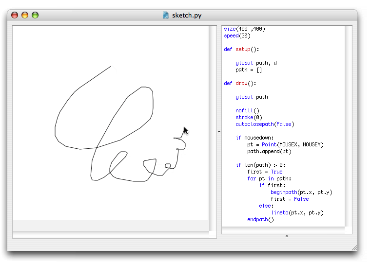

NodeBox is designed to output PDF documents or images, when you want to do all sorts of moving and interactive things you're probably better off with a tool like Processing.
However, if you do want to experiment with interactivity in NodeBox, there's some built-in
support that might be of help to you. This assumes you already know how to make an animation in NodeBox.
In a NodeBox animation, there are three predefined variables that store the current position of the mouse cursor and the state of the mouse button:
You would typically use the mousedown variable in an if-statement:
if mousedown: # do stuff when the mouse is pressed else: # do stuff when the mouse isn't pressed
Three predefined variables store the keys a user is pressing during a NodeBox animation:
The key and keycode variables are updated as long as any key is being pressed.
KEY_UP, KEY_DOWN_ KEY_LEFT, KEY_RIGHT, KEY_BACKSPACE contain the keycodes for the arrow keys
and the backspace key.
A fun example is this little sketch application. Simply run the code and draw some stuff on the canvas! 
size(400 ,400) speed(30) def setup(): global path, d path = [] def draw(): global path nofill() stroke(0) autoclosepath(False) if mousedown: pt = Point(MOUSEX, MOUSEY) path.append(pt) if len(path) > 0: first = True for pt in path: if first: beginpath(pt.x, pt.y) first = False else: lineto(pt.x, pt.y) endpath()